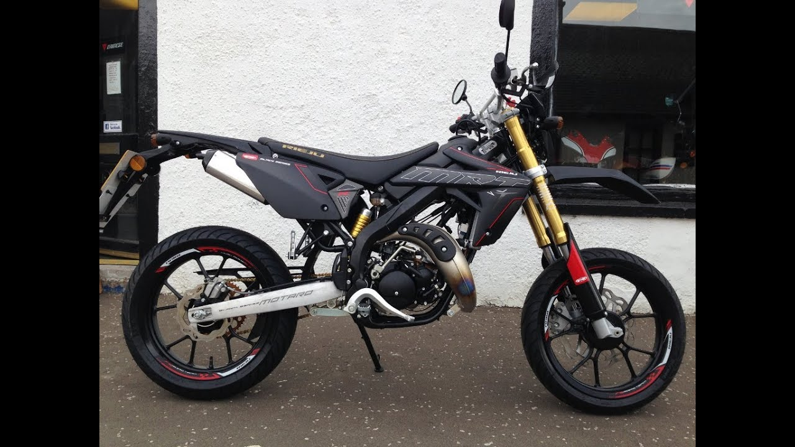
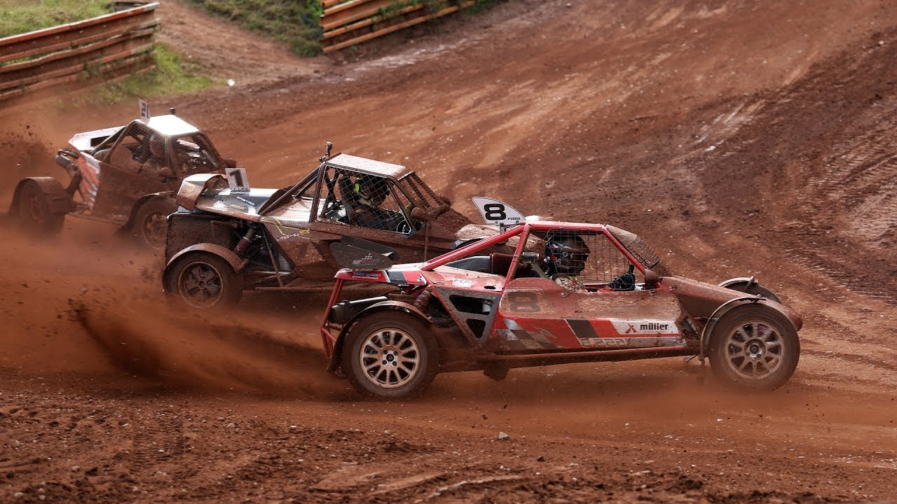
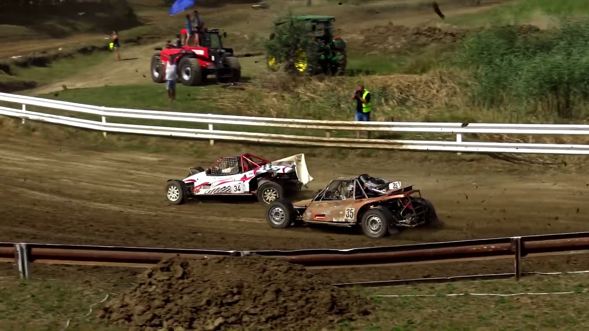

Hobbik
Tipikus hobbim nem nagyon van,de van néhány dolog amit szeretek csinálni.
Az egyik ilyen dolog a motorozás, még csak 50ccm-es motorra van jogosítványom, de egyetem után szeretnem megszerezni a korlátlant is.
Gyakran "gameelünk" a barátaimmal, szeretem a "competitive" és "story based" játékokat is.
Az utolsó és szerintem legérdekesebb , autocross versenyekre járás . Az autocross autók nagyjábol 500-700 Le-vel rendelkeznek és ehhez csupán 700kg társul.
Néhány kép a hobbijaimról:
A motorom
Autocross Európa Bajnokság
Autocross Magyar Bajnokság